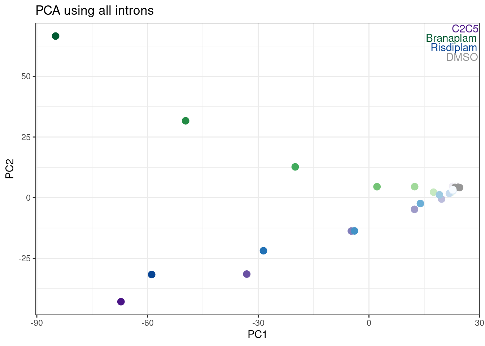

Last updated: 2022-09-16
Checks: 5 2
Knit directory: 20211209_JingxinRNAseq/analysis/
This reproducible R Markdown analysis was created with workflowr (version 1.6.2). The Checks tab describes the reproducibility checks that were applied when the results were created. The Past versions tab lists the development history.
The R Markdown is untracked by Git. To know which version of the R Markdown file created these results, you’ll want to first commit it to the Git repo. If you’re still working on the analysis, you can ignore this warning. When you’re finished, you can run wflow_publish to commit the R Markdown file and build the HTML.
Great job! The global environment was empty. Objects defined in the global environment can affect the analysis in your R Markdown file in unknown ways. For reproduciblity it’s best to always run the code in an empty environment.
The command set.seed(19900924) was run prior to running the code in the R Markdown file. Setting a seed ensures that any results that rely on randomness, e.g. subsampling or permutations, are reproducible.
Great job! Recording the operating system, R version, and package versions is critical for reproducibility.
Nice! There were no cached chunks for this analysis, so you can be confident that you successfully produced the results during this run.
Using absolute paths to the files within your workflowr project makes it difficult for you and others to run your code on a different machine. Change the absolute path(s) below to the suggested relative path(s) to make your code more reproducible.
| absolute | relative |
|---|---|
| /project2/yangili1/bjf79/20211209_JingxinRNAseq/code/bigwigs/unstranded/(.+?).bw | ../code/bigwigs/unstranded/(.+?).bw |
Great! You are using Git for version control. Tracking code development and connecting the code version to the results is critical for reproducibility.
The results in this page were generated with repository version 5418449. See the Past versions tab to see a history of the changes made to the R Markdown and HTML files.
Note that you need to be careful to ensure that all relevant files for the analysis have been committed to Git prior to generating the results (you can use wflow_publish or wflow_git_commit). workflowr only checks the R Markdown file, but you know if there are other scripts or data files that it depends on. Below is the status of the Git repository when the results were generated:
Ignored files:
Ignored: .DS_Store
Ignored: .Rhistory
Ignored: .Rproj.user/
Ignored: ._.DS_Store
Ignored: analysis/.RData
Ignored: analysis/.Rhistory
Ignored: analysis/20220707_TitrationSeries_DE_testing.nb.html
Ignored: code/.DS_Store
Ignored: code/._.DS_Store
Ignored: code/._DOCK7.pdf
Ignored: code/._DOCK7_DMSO1.pdf
Ignored: code/._DOCK7_SM2_1.pdf
Ignored: code/._FKTN_DMSO_1.pdf
Ignored: code/._FKTN_SM2_1.pdf
Ignored: code/._MAPT.pdf
Ignored: code/._PKD1_DMSO_1.pdf
Ignored: code/._PKD1_SM2_1.pdf
Ignored: code/.snakemake/
Ignored: code/5ssSeqs.tab
Ignored: code/Alignments/
Ignored: code/ChemCLIP/
Ignored: code/ClinVar/
Ignored: code/DE_testing/
Ignored: code/DE_tests.mat.counts.gz
Ignored: code/DE_tests.txt.gz
Ignored: code/DoseResponseData/
Ignored: code/Fastq/
Ignored: code/FastqFastp/
Ignored: code/FragLenths/
Ignored: code/Meme/
Ignored: code/Multiqc/
Ignored: code/OMIM/
Ignored: code/OldBigWigs/
Ignored: code/QC/
Ignored: code/Session.vim
Ignored: code/SplicingAnalysis/
Ignored: code/TracksSession
Ignored: code/bigwigs/
Ignored: code/featureCounts/
Ignored: code/geena/
Ignored: code/igv_session.template.xml
Ignored: code/igv_session.xml
Ignored: code/log
Ignored: code/logs/
Ignored: code/scratch/
Ignored: code/scripts/.TidyAndSpearmanCorTitrationData.R.swp
Ignored: code/test.txt.gz
Ignored: code/testPlottingWithMyScript.ForJingxin.sh
Ignored: code/testPlottingWithMyScript.ForJingxin2.sh
Ignored: code/testPlottingWithMyScript.ForJingxin3.sh
Ignored: code/testPlottingWithMyScript.ForJingxin4.sh
Ignored: code/testPlottingWithMyScript.sh
Ignored: data/._Hijikata_TableS1_41598_2017_8902_MOESM2_ESM.xls
Ignored: data/._Hijikata_TableS2_41598_2017_8902_MOESM3_ESM.xls
Ignored: output/._PioritizedIntronTargets.pdf
Untracked files:
Untracked: analysis/20220915_ExploreDoseResponseCryptic3ss.Rmd
Untracked: analysis/20220915_ExploreSpliceQOutput.Rmd
Untracked: analysis/20220916_CompareDE_LCL_Fibroblast.Rmd
Untracked: code/envs/spliceq.yaml
Untracked: code/scripts/MergeSpliceQ.Tables.R
Untracked: code/scripts/TidyAndSpearmanCorTitrationData.R
Unstaged changes:
Modified: code/Snakefile
Modified: code/rules/RNASeqProcessing.smk
Modified: code/scripts/GenometracksByGenotype
Note that any generated files, e.g. HTML, png, CSS, etc., are not included in this status report because it is ok for generated content to have uncommitted changes.
There are no past versions. Publish this analysis with wflow_publish() to start tracking its development.
In my previous analysis based on fibroblast data, I found about as many instances of upregulated cryptic 3’ss splicing (restricted analyses to clusters with only 2 introns) as upregulated cryptic 5’ss. That suggested to me that the known mechanisms of increasing splicing at GA|GT introns only accounts for part of the observed splicing changes… For example, I hypothesized that these molecules may also promote activation of cryptic 3’ss through stabilizing non-canonical branchpoints with extra bulges to U2snRNA. However, I failed to detect any particular motif in the bpt region among the top cryptic 3’ss with MEME. Furthermore, in a more recent analysis, when I looked at the dose response data of a random set of ~200 introns, most introns did not have a reasonable looking dose-response effect, and in fact, the introns that did have a reasonable dose-response increase where mostly in GA-GT intron-containing clusters, suggesting the GA-GT introns do account for most of the direct dose-dependent effects of the molecules. Today I will investigate these ideas a bit more… For example, I want to get a better sense of what fraction of reliable dose-dependent effects can be attributed to GA-GT introns (or introns in the same cluster which can be attributed an effect on the GA-GT introns).
If I find a large fraction (say 50%) of reliable dose-response curves aren’t in a cluster containing a GA-GT intron, I will be a bit more intrigued by the hypothesis about U2 snRNA and branchpoints. However, since the BP can only be mapped in a basically invisible (to RNA-seq) and short-lived intermediate, it makes proving this hypothesis very difficult from current data. I feel like to really test this hypothesis, one would actually need to experimentally modify the BP region in a gene and test drug effects on splicing.
I have talked briefly to Yang about a potential future experiment involving a MPRA to experimentally measure drug-induced splicing effects on various splice-site sequences. He asked for a bit of background, before we gameplan if we really want to do these kinds of experiments, and if we should try collaborate, etc.
Here are a few papers that do something similar:
I think Rosenberg et al is most similar to what I envision would be useful for us… But all of these papers are similar in the sense that the idea to create a plasmid library of minigenes with splice-substrate minigene with sequence variants, then transiently transfect into cells, and measure splicing with RT-PCR followed by deep-sequencing. Rosenberg et al uses either a minigene with competing 5’ss, or with competing 3’ss, and introduces 25N degenerate regions to measure the effect of random sequences in positions flanking the splice sites. I think in our case, we are most interested in the sequences directly at the 5’ss::U1 interface (by the known mechanism of these drugs), and in my opinion in the branchpoint region would be another interesting place to introduce random sequences. I think for our experiments, a 25N degenerate region might be a bit too complex of a plasmid library, and we can focus our degenerate regions to say -4:+7 relative to the 5’ss, while fixing the splice donor GT sequence, so that we can more exhaustively cover the \(4^9=262144\) possible sequences, or maybe if we were to test the branchpoint region we could just create a smaller 6 or 7 nucleotide degenerate region, fixing an single A or something (\(4^6=4096\) possible sequences). I could also envision putting a large degenerate sequencing flanking a splice site to test the hypothesis that local secondary structures may influence susceptability to drug as has been suggested in SMN2. And so of course, we would want measure splicing of the plasmid library at least twice: with or without drug treatment. Here is a rough schematic of what I mean:
schematic
Here, like Rosenberg et al, I drew in 3’ UTR barcodes into the plsamid library, to easily distinguish the pre-mRNA substrates sequence from the sequence at the 3’ UTR that can be read out in paired end sequencing of an RT-PCR product.
In Rosenberg, where they used competing 5’ss, they didn’t give much detail onto the origin of these competing 5’ss. I surmise finding 5’ss that can actually naturally compete near 50/50 (or rather, close to 22.4/50 is what Rosenberg actually observed between the two splice sites) is key to getting useful read-out. started with the Citrine gene sequence and inserted competing splice sites. The methods section is devoid of much detail:
“Cloning of Degenerate Libraries The libraries were assembled with PCR and standard Gibson assembly (Gibson et al., 2009) using degenerate oligonucleotides (IDTDNA). First Citrine was split into two exons, and the first exon of the Citrine gene was altered to remove any potential splice donors, without altering the amino acid sequence. The introns with degenerate sequences were inserted between the two exons of Citrine. The barcode sequence was inserted into the 3′ UTR of Citrine.”
I figure that perhaps a good place to start is to look for naturally occuring cryptic 5’ss that is drug-inducible (from our existing fibroblast/LCL data) for a good starting point for cloning a library. Or we could alterantively/additionally, start with a naturally occuring cryptic 3’ss with a ratio close to 50/50. If Jingxin is also interested in pursuing this idea with us, I could find some candidate introns with these qualities, in case they are interested in cloning them (since they probably have the cloning protocol well figured for these kinds of minigene assays), to establish a plasmid backbone before introducing degenerate regions.
Also, there are many papers that use MPRA and have tips for cloning with degenerate oligos (it is slightly different from cloning a single sequence, since we want to be able to maintain and measure library complexity). Here is one protocol I found online. The protocol seems straightforward to me. The other aspects of this experiment seem straightforward or things I have experience with: transient transfection of plasmid library, RT-PCR deep sequencing, processing similar data.
Ok, now I will get back to analysis… thinking about look at lots of dose-response curves, and getting a sense of if most all the upregulated introns are a GA|GT intron (or in a GA|GT intron cluster)… Also, here I will show my work in finding a list of candidate minigene backbones for this degenerate plasmid MPRA idea.
Let’s start by reading in the PSI tables, and intron-level metadata, to reproduce some of my previous observations that led me to think there was lots of cryptic 3’ss usage in addition to cryptic 5’ss usage, but this time making use of the LCL dose-response data instead of the fibroblast data.
library(tidyverse)
library(GenomicRanges)
library(drc)
library(broom)
library(GGally)
library(qvalue)
#Read in sample metadata
sample.list <- read_tsv("../code/bigwigs/BigwigList.tsv",
col_names = c("SampleName", "bigwig", "group", "strand")) %>%
filter(strand==".") %>%
mutate(old.sample.name = str_replace(bigwig, "/project2/yangili1/bjf79/20211209_JingxinRNAseq/code/bigwigs/unstranded/(.+?).bw", "\\1")) %>%
separate(SampleName, into=c("treatment", "dose.nM", "cell.type", "libType", "rep"), convert=T, remove=F, sep="_") %>%
left_join(
read_tsv("../code/bigwigs/BigwigList.groups.tsv", col_names = c("group", "color", "bed", "supergroup")),
by="group"
)
TreatmentColorsForLabels <- sample.list %>%
group_by(treatment) %>%
filter(dose.nM == max(dose.nM) | treatment == "DMSO") %>%
ungroup() %>%
distinct(treatment, .keep_all=T) %>%
arrange(dose.nM) %>%
mutate(vjust=row_number()*1.2)
TreatmentColorsLabels.Layer <- geom_text(
data = TreatmentColorsForLabels,
aes(label=treatment, color=color, vjust=vjust),
y=Inf, x=Inf, hjust=1.05
)
# Read in list of introns detected across all experiments that pass leafcutter's default clustering processing thresholds
all.samples.PSI <- read_tsv("../code/SplicingAnalysis/leafcutter_all_samples/PSI.table.bed.gz")
all.samples.5ss <- read_tsv("../code/SplicingAnalysis/FullSpliceSiteAnnotations/JuncfilesMerged.annotated.basic.bed.5ss.tab.gz", col_names = c("intron", "seq", "score")) %>%
mutate(intron = str_replace(intron, "^(.+?)::.+$", "\\1")) %>%
separate(intron, into=c("chrom", "start", "stop", "strand"), sep="_", convert=T, remove=F)
all.samples.intron.annotations <- read_tsv("../code/SplicingAnalysis/FullSpliceSiteAnnotations/JuncfilesMerged.annotated.basic.bed.gz")Since we don’t have replicates, and since I expect the dose response relationship to not necessarily be linear (but rather a monotonic sigmoidal increase/decrease), as a proxy for identifying dose-responsive genes I will just use spearman correlation coefficient as before, looking for relationship between PSI for each intron and dose.
merged.dat.df <- all.samples.PSI %>%
dplyr::select(-contains("fibroblast")) %>%
dplyr::select(-contains("chRNA")) %>%
drop_na() %>%
inner_join(all.samples.5ss, by=c("#Chrom"="chrom", "start", "end"="stop", "strand")) %>%
inner_join(all.samples.intron.annotations, by=c("#Chrom"="chrom", "start", "end", "strand") )identifying splice donors that have a nearby upstream splice acceptor:
MaxCassetteExonLen <- 300
merged.dat.df.donors.granges <- merged.dat.df %>%
dplyr::select(chrom=`#Chrom`, intron.start=start, intron.end=end, strand) %>%
mutate(start = case_when(
strand == "+" ~ intron.start,
strand == "-" ~ intron.end -2
)) %>%
mutate(end = start +2) %>%
dplyr::select(chrom, start, end, strand) %>%
distinct() %>%
add_row(chrom="DUMMY", start=0, end=1, strand="+", .before=1) %>%
makeGRangesFromDataFrame()
splicing.acceptors.granges <- all.samples.PSI %>%
dplyr::select(1:6) %>%
filter(gid %in% merged.dat.df$gid) %>%
filter(!junc %in% merged.dat.df$junc) %>%
dplyr::select(chrom=`#Chrom`, intron.start=start, intron.end=end, strand) %>%
mutate(start = case_when(
strand == "+" ~ intron.end -2,
strand == "-" ~ intron.start -2
)) %>%
mutate(end = start +2) %>%
dplyr::select(chrom, start, end, strand) %>%
distinct() %>%
makeGRangesFromDataFrame()
PrecedingIndexes <- GenomicRanges::follow(merged.dat.df.donors.granges, splicing.acceptors.granges, select="last") %>%
replace_na(1)
UpstreamAcceptors.df <- cbind(
merged.dat.df.donors.granges %>% as.data.frame() %>%
dplyr::rename(chrom=1, start=2, end=3, width=4, strand=5),
splicing.acceptors.granges[PrecedingIndexes] %>% as.data.frame() %>%
dplyr::rename(chrom.preceding=1, start.preceding=2, end.preceding=3, width.preceding=4, strand.preceding=5)
) %>%
filter(as.character(chrom) == as.character(chrom.preceding)) %>%
filter((strand=="+" & start - end.preceding < MaxCassetteExonLen) | (strand=="-" & start.preceding - end < MaxCassetteExonLen)) %>%
mutate(SpliceDonor = case_when(
strand == "+" ~ paste(chrom, start, strand, sep="."),
strand == "-" ~ paste(chrom, end, strand, sep=".")
)) %>%
mutate(UpstreamSpliceAcceptor = case_when(
strand == "+" ~ paste(chrom, end.preceding, strand, sep="."),
strand == "-" ~ paste(chrom, start.preceding, strand, sep=".")
)) %>%
dplyr::select(SpliceDonor, UpstreamSpliceAcceptor)
# Add the UpstreamSpliceAcceptor column to the splicing.gagt.df. NA indicates there is no upstream splice acceptor
merged.dat.df <- merged.dat.df %>%
mutate(SpliceDonor = case_when(
strand == "+" ~ paste(`#Chrom`, start, strand, sep="."),
strand == "-" ~ paste(`#Chrom`, end, strand, sep=".")
)) %>%
left_join(UpstreamAcceptors.df, by="SpliceDonor") %>%
mutate(IntronType = recode(anchor, A="Alt 5'ss", D="Alt 3'ss", DA="Annotated", N="New Intron", NDA="New Splice Site combination"))So I added a new column called UpstreamSpliceAcceptor that has the coordinates of the nearest upstream 3’ss (within the leafcutter PSI table, which by nature excludes constitutive splice sites) within 300bp. I have found that this is a good way to filter for the GA|GT introns involved in cassette exon inclusion. If this column has NA, it is unlikely this intron is involved in exon inclusion.
Before looking at the spearman correlation ceofficient, let’s reproduce that PCA with the first PC basically representing dose, and the second PC representing branaplam/risdiplam-specific effects:
merged.dat.df.pca <- merged.dat.df %>%
dplyr::select(junc, contains("LCL")) %>%
column_to_rownames("junc") %>% as.matrix() %>%
scale() %>%
t() %>% prcomp()
PC.dat <- merged.dat.df.pca$x %>%
as.data.frame() %>%
rownames_to_column("SampleName") %>%
dplyr::select(SampleName, PC1, PC2, PC3) %>%
left_join(sample.list, by="SampleName")
ggplot(PC.dat, aes(x=PC1, y=PC2, color=color)) +
TreatmentColorsLabels.Layer +
geom_point(size=3) +
scale_color_identity() +
theme_bw() +
labs(title = "PCA using all introns")
Now read in the spearman coef for each intron that I previously calculated. As in my previous notebook, I included a randomly selected DMSO sample for each junction into the titration series (as dose=0) before calculating spearman coef.
spearman.dat <- read_tsv("../code/DoseResponseData/LCL/TidySplicingDoseData.txt.gz")
spearman.dat %>%
group_by(junc) %>%
summarise(max.PSI=max(PSI)) %>%
ggplot(aes(x=max.PSI)) +
stat_ecdf() +
labs(title="Distribution of MaxPSI across all samples for each intron", y="ecdf")spearman.dat %>%
group_by(junc) %>%
filter(max(PSI) > 5) %>%
distinct(junc, treatment, spearman, IntronType) %>%
ggplot(aes(x=spearman, color=IntronType)) +
stat_ecdf() +
labs(title="spearman correlation coef, by splicing type", caption="Only Introns with max(PSI)>5%", y="ecdf")spearman.dat %>%
group_by(junc) %>%
filter(max(PSI) > 5) %>%
ungroup() %>%
distinct(junc, treatment, spearman, IntronType, .keep_all=T) %>%
mutate(IsGAGT = str_detect(seq, "^\\w{2}GAGT")) %>%
ggplot(aes(x=spearman, color=IntronType)) +
stat_ecdf() +
facet_wrap(~IsGAGT) +
labs(title="spearman correlation coef, by splicing type, is GA|GT", caption="Only Introns with max(PSI)>5%", y="ecdf")Ok, note that alt 3’ss also had positive median effect. Is this true even if we eliminate introns in a GA|GT cluster?
spearman.dat %>%
group_by(junc) %>%
filter(max(PSI) > 5) %>%
ungroup() %>%
distinct(junc, treatment, spearman, IntronType, .keep_all=T) %>%
group_by(gid) %>%
mutate(any(str_detect(seq, "^\\w{2}GAGT"))) %>%
mutate(In.GAGT.cluster = str_detect(seq, "^\\w{2}GAGT")) %>%
ggplot(aes(x=spearman, color=IntronType)) +
stat_ecdf() +
facet_wrap(~In.GAGT.cluster) +
labs(title="spearman correlation coef, by splicing type, is in GA|GT-containing cluster", caption="Only Introns with max(PSI)>5%", y="ecdf")Let’s check some of the top introns by spearman correlation ceof, and ask how many of them are in GA-GT containing clusters:
spearman.dat %>%
group_by(junc) %>%
filter(max(PSI) > 5) %>%
ungroup() %>%
distinct(junc, treatment, spearman, IntronType, .keep_all=T) %>%
group_by(gid) %>%
mutate(In.GAGT.cluster = if_else(any(str_detect(seq, "^\\w{2}GAGT")), "GA|GT-containing cluster", "Not GA|GT-containing cluster")) %>%
ungroup() %>%
filter(!is.na(spearman)) %>%
mutate(SpearmanCoefRange = cut(spearman, include.lowest=T, breaks=seq(-1, 1, 0.1))) %>%
add_count(SpearmanCoefRange, treatment, In.GAGT.cluster) %>%
ggplot(aes(x=SpearmanCoefRange, fill=IntronType)) +
geom_bar(position="fill") +
scale_y_continuous(expand=c(0,0), limits=c(0,1.15)) +
geom_text(
data = . %>%
distinct(treatment, SpearmanCoefRange, In.GAGT.cluster, .keep_all=T),
aes(x=SpearmanCoefRange, label=n, angle=90, hjust=1.5, vjust=0.5),
y=Inf-0.1, size=2) +
theme_classic() +
theme(axis.text.x = element_text(angle = 90, vjust = 0.5, hjust=1)) +
facet_grid(rows= vars(In.GAGT.cluster), cols=vars(treatment)) +
labs(title="Fraction of AS types by spearman coef", y="Fraction", caption="Num intron:treatment in each group at top")So there similar number or maybe more introns in non-GA|GT clusters than in GA|GT clusters with high spearman correlation coef, many of which are alt 5’ss or alt 3’ss.
Now let’s look at all clusters with just two, and see if there are as many upregulated cryptic 3’ss as there is cryptic 5’ss events.
spearman.dat %>%
distinct(junc, treatment, .keep_all=T) %>%
add_count(treatment, gid) %>%
filter(n==2) %>%
group_by(gid, treatment) %>%
filter(any((spearman > 0.9) & (IntronType %in% c("Alt 3'ss", "Alt 5'ss")))) %>%
filter(all(IntronType %in% c("Alt 3'ss", "Annotated")) | all(IntronType %in% c("Alt 5'ss", "Annotated"))) %>%
mutate(In.GAGT.cluster = if_else(any(str_detect(seq, "^\\w{2}GAGT")), "GA|GT-containing cluster", "Not GA|GT-containing cluster")) %>%
arrange(IntronType) %>%
mutate(ClusterConfiguration = paste(IntronType, collapse = ", ")) %>%
ungroup() %>%
count(treatment, ClusterConfiguration, In.GAGT.cluster, name="NumClusters") %>%
filter(ClusterConfiguration %in% c("Alt 3'ss, Annotated", "Alt 5'ss, Annotated")) %>%
ggplot(aes(y=NumClusters, x=ClusterConfiguration, fill=In.GAGT.cluster)) +
geom_col(position="stack") +
theme_classic() +
theme(axis.text.x = element_text(angle = 90, vjust = 0.5, hjust=1)) +
facet_wrap(~treatment) +
labs(title="There are about as many upregulated cryptic 3'ss as upregulated cryptic 5'ss",
caption="Count of upregulated (spearman>0.9) cryptic introns in simple cluster configurations")Ok, that is all consistent with what I saw in the fibroblast data: I see that (as expected) the simple leafcutter clusters with crpytic splicing (n=2 introns, with one annotated and one upregulated cryptic splice site intron) where the crpytic splice site intron is an alt 5’ss, there is a huge enrichment in GA|GT introns. What I find more interesting about this is that there are overall about a similar number of upregulated alt 3’ss as upregulated alt 5’ss in this set of simple/interpretable clusters. Let me plot the dose response data for some of these introns to make sure the dose-response data is solid.
SimpleClustersToPlot <- spearman.dat %>%
distinct(junc, treatment, .keep_all=T) %>%
add_count(treatment, gid) %>%
filter(n==2) %>%
group_by(gid, treatment) %>%
filter(any((spearman > 0.9) & (IntronType %in% c("Alt 3'ss", "Alt 5'ss")))) %>%
filter(all(IntronType %in% c("Alt 3'ss", "Annotated")) | all(IntronType %in% c("Alt 5'ss", "Annotated"))) %>%
mutate(In.GAGT.cluster = if_else(any(str_detect(seq, "^\\w{2}GAGT")), "GA|GT-containing cluster", "Not GA|GT-containing cluster")) %>%
arrange(IntronType) %>%
mutate(ClusterConfiguration = paste(IntronType, collapse = ", ")) %>%
ungroup() %>%
distinct(gid, ClusterConfiguration, In.GAGT.cluster)
sample_n_of <- function(data, size, ...) {
dots <- quos(...)
group_ids <- data %>%
group_by(!!! dots) %>%
group_indices()
sampled_groups <- sample(unique(group_ids), size)
data %>%
filter(group_ids %in% sampled_groups)
}
set.seed(0)
spearman.dat %>%
inner_join(SimpleClustersToPlot, by="gid") %>%
mutate(gid = paste(gid, ClusterConfiguration, In.GAGT.cluster, sep="\n")) %>%
filter(!IntronType=="Annotated") %>%
sample_n_of(20, gid) %>%
ggplot(aes(color=treatment)) +
geom_line(aes(x=dose.nM, y=PSI)) +
scale_x_continuous(trans="log1p", limits=c(0, 10000), breaks=c(10000, 3160, 1000, 316, 100, 31.6, 10, 3.16, 1, 0.316, 0)) +
facet_wrap(~gid, scales = "free_y") +
theme_bw() +
theme(axis.text.x = element_text(angle = 45, vjust = 1, size=4)) +
labs(title="20 upregulated cryptic 5' or 3' splice sites introns", caption="plotting effect of the cryptic intron\nFacetTitle: clusterID, ClusterConfiguration, Does.Cluster.Contain.GA|GT.Intron") +
theme(strip.text.x = element_text(size = 4))Ok, so these cryptic 5’ss that aren’t in a GA-GT-containing cluster, and also these cryptic 3’ss that aren’t in a GA-GT-containing cluster, both look like really quality/believable dose-response relationship… So again, I am intriguied by the possibility of non GA-GT related mechanisms for splice modulation.
This is still do to… I’ll probably just wait till discussing the idea more with Jingxin and Yang before even attempting to look for these…
Yang and Jinxgin have suggested repeating some dose-response titration expriments in different cell types - possibly organoids (brain organoids, cardiac organoids, ipscs, etc). We will likely do bulk RNA-sequencing with high coverage (eg >70M reads per library) to try to get quality splicing measurements. In a different notebook I showed that the effects we measure in LCLs are largely concordant with the effects measured in fibroblasts, so I think the real value in these experiments is to be able to assay effects in genes not well-expressed in our current LCL or fibroblast data.
Here I will do some quick analysis to get a sense of how some genes of interest (OMIM disease genes, or hand picked genes of interest) are expressed in various cell types, based on ENCODE data… So from ENCODE web portal, I downloaded a gene expression matrix for a few cell types of interest and here I will plot expression (TPM) of those genes. Part of why I want to do this is to see if a lot of these interesting neuronal genes (eg MAPT, alpha synuclein, etc) can be captured from neural progenitor cells (NPCs) which are probably more convenient to work with than ipsc-derived “mature” neurons or brain organoids, since NPCs can be frozen and are still mitotic so easy to expand culture for large experiments.
Ok, let’s plot expression of some select genes of interest in samples from some of the cell types i was interested in from those available from ENCODE:
library(data.table)
dat <- fread("../code/scratch/rna_expression_report_2022_9_16_14h_44m.tsv.gz")
Genes <- read_tsv("../data/Genes.list.txt")
dat <- dat %>%
filter(str_detect(`Feature ID`, "^EN")) %>%
mutate(ensembl_gene_id=str_replace(`Feature ID`, "(EN.+?)\\..+$", "\\1")) %>%
inner_join(Genes, by="ensembl_gene_id")
dat %>%
filter(hgnc_symbol %in% c("HTT", "SNCA", "MAPT", "FOXM1", "SMN1", "SMN2", "GALC", "AKT3", "STAT1", "SOX2", "RBFOX3","MAP2")) %>%
mutate(CellType = recode(`Biosample term name`,
"H1"="hESC",
"GM12878"="LCL",
"fibroblast of skin of back"="fibroblast",
"neural cell"="hESC-derived neuron",
"neuronal stem cell"="hESC-dervied neural progenitor cell",
"SK-N-SH"="SK-N-SH neuronal cancer line"
)) %>%
ggplot(aes(x=CellType, y=TPM, color=CellType)) +
geom_jitter(width=0.25) +
scale_y_continuous(trans="log10") +
facet_wrap(~`Gene symbol`) +
theme_bw() +
theme(axis.title.x=element_blank(),
axis.text.x=element_blank(),
axis.ticks.x=element_blank()) +
labs(title = "ENCODE expression of select genes in cell types", x="Cell type", caption="TPM>1 is generally well quantified in RNA-seq at standard read depth")Note that in reality, the ability to reliably measure a gene’s expression might be better quantified with a CPM (CountsPerMillion) metric, than a TPM metric. But as a rule of thumb I wrote here that TPM>1 is generally well quantified and we can probably get reliable dose-response data at the gene level from that (especially if the gene is long and has more mapping space, hence my point about CPM vs TPM). But ENCODE doesn’t seem to make CPM values easily/conveniently available so I’m just plotting TPM for ease.
Ok, let’s look at some more genes… How about looking at all OMIM genes from the list of OMIM genes I have been looking at that are dominant negative or have OMIM gain-of-function mutations.
AR <- readxl::read_excel("../data/Hijikata_TableS1_41598_2017_8902_MOESM2_ESM.xls", col_types="text") %>%
filter(Inheritance=="AR") %>%
mutate(ModeInheritence = "AutosomalRecessive")
AD <- readxl::excel_sheets("../data/Hijikata_TableS2_41598_2017_8902_MOESM3_ESM.xls") %>%
set_names() %>%
map(readxl::read_excel, path = "../data/Hijikata_TableS2_41598_2017_8902_MOESM3_ESM.xls", col_types="text") %>%
bind_rows(.id = "ModeInheritence")
OmimTable <- read_tsv("../code/OMIM/mimTitles.txt", skip=2)
HijikataMappings <- bind_rows(AR, AD) %>%
mutate(ModeInheritence = recode(ModeInheritence, DN="DominantNegative", GF="GainOfFunction", HI="Haploinsufficient")) %>%
mutate(MIM_phenotype=as.numeric(MIM_phenotype)) %>%
left_join(OmimTable, by=c("MIM_phenotype"="MIM Number"))
HijikataMappings %>%
write_tsv("../code/scratch/HijikataMappings.tsv.gz")Below I chose to plot the median expression across the ENCODE samples for the cell types of interest, faceting by whether the gene is best captured by the ipsc-derived neurons (perhaps closest to the brain organoids)…
HijikataMappings <- read_tsv("../code/scratch/HijikataMappings.tsv.gz")
DominantNegGenes <- HijikataMappings %>%
filter(ModeInheritence %in% c("DominantNegative", "GainOfFunction")) %>%
distinct(Gene)
dat %>%
filter(hgnc_symbol %in% DominantNegGenes$Gene) %>%
mutate(CellType = recode(`Biosample term name`,
"H1"="hESC",
"GM12878"="LCL",
"fibroblast of skin of back"="fibroblast",
"neural cell"="hESC-derived neuron",
"neuronal stem cell"="hESC-dervied neural progenitor cell",
"SK-N-SH"="SK-N-SH neuronal cancer line"
)) %>%
group_by(CellType, hgnc_symbol) %>%
summarise(MedTPM = median(TPM)) %>%
ungroup() %>%
group_by(hgnc_symbol) %>%
mutate(IsMax = max(MedTPM) == MedTPM) %>%
mutate(IsMaxNeuronal = if_else(any(IsMax & CellType=="hESC-derived neuron"), "MaxExpression in hESC-derived neuron", "MaxExpression not in hESC-derived neuron")) %>%
ungroup() %>%
ggplot(aes(x=MedTPM, y=hgnc_symbol, color=CellType)) +
geom_point() +
geom_vline(xintercept=1, linetype='dashed') +
scale_x_continuous(trans="log10") +
theme_classic() +
scale_y_discrete(limits=rev) +
facet_grid(rows=vars(IsMaxNeuronal), scales = "free_y", space="free_y") +
labs(title="OMIM DominantNeg/GainOfFunction genes\nexpressed in select ENCODE cell types", x="Median TPM")
sessionInfo()R version 3.6.1 (2019-07-05)
Platform: x86_64-pc-linux-gnu (64-bit)
Running under: CentOS Linux 7 (Core)
Matrix products: default
BLAS/LAPACK: /software/openblas-0.2.19-el7-x86_64/lib/libopenblas_haswellp-r0.2.19.so
locale:
[1] LC_CTYPE=en_US.UTF-8 LC_NUMERIC=C LC_TIME=C
[4] LC_COLLATE=C LC_MONETARY=C LC_MESSAGES=C
[7] LC_PAPER=C LC_NAME=C LC_ADDRESS=C
[10] LC_TELEPHONE=C LC_MEASUREMENT=C LC_IDENTIFICATION=C
attached base packages:
[1] parallel stats4 stats graphics grDevices utils datasets
[8] methods base
other attached packages:
[1] data.table_1.14.2 qvalue_2.16.0 GGally_1.4.0
[4] broom_1.0.0 drc_3.0-1 MASS_7.3-51.4
[7] GenomicRanges_1.36.1 GenomeInfoDb_1.20.0 IRanges_2.18.1
[10] S4Vectors_0.22.1 BiocGenerics_0.30.0 forcats_0.4.0
[13] stringr_1.4.0 dplyr_1.0.9 purrr_0.3.4
[16] readr_1.3.1 tidyr_1.2.0 tibble_3.1.7
[19] ggplot2_3.3.6 tidyverse_1.3.0
loaded via a namespace (and not attached):
[1] TH.data_1.1-1 colorspace_1.4-1 ellipsis_0.3.2
[4] rio_0.5.16 rprojroot_2.0.2 XVector_0.24.0
[7] fs_1.5.2 rstudioapi_0.14 farver_2.1.0
[10] fansi_0.4.0 mvtnorm_1.1-3 lubridate_1.7.4
[13] xml2_1.3.2 R.methodsS3_1.7.1 codetools_0.2-18
[16] splines_3.6.1 knitr_1.39 jsonlite_1.6
[19] workflowr_1.6.2 dbplyr_1.4.2 R.oo_1.22.0
[22] compiler_3.6.1 httr_1.4.4 backports_1.4.1
[25] assertthat_0.2.1 Matrix_1.2-18 fastmap_1.1.0
[28] cli_3.3.0 later_0.8.0 htmltools_0.5.3
[31] tools_3.6.1 gtable_0.3.0 glue_1.6.2
[34] GenomeInfoDbData_1.2.1 reshape2_1.4.3 Rcpp_1.0.5
[37] carData_3.0-5 cellranger_1.1.0 vctrs_0.4.1
[40] xfun_0.31 openxlsx_4.1.0.1 rvest_0.3.5
[43] lifecycle_1.0.1 gtools_3.9.2.2 zlibbioc_1.30.0
[46] zoo_1.8-10 scales_1.1.0 hms_0.5.3
[49] promises_1.0.1 sandwich_3.0-2 RColorBrewer_1.1-2
[52] yaml_2.2.0 curl_3.3 reshape_0.8.8
[55] stringi_1.4.3 highr_0.9 plotrix_3.8-2
[58] zip_2.2.1 rlang_1.0.5 pkgconfig_2.0.2
[61] bitops_1.0-6 evaluate_0.15 lattice_0.20-38
[64] labeling_0.3 tidyselect_1.1.2 plyr_1.8.4
[67] magrittr_1.5 R6_2.4.0 generics_0.1.3
[70] multcomp_1.4-19 DBI_1.1.0 pillar_1.7.0
[73] haven_2.3.1 foreign_0.8-71 withr_2.5.0
[76] survival_2.44-1.1 abind_1.4-5 RCurl_1.98-1.1
[79] modelr_0.1.8 crayon_1.3.4 car_3.0-5
[82] utf8_1.1.4 rmarkdown_1.13 grid_3.6.1
[85] readxl_1.3.1 git2r_0.26.1 reprex_0.3.0
[88] digest_0.6.20 httpuv_1.5.1 R.utils_2.9.0
[91] munsell_0.5.0